작업 흐름
- 입력
- 이야기나 장소 하나(어떤 만화인지, 장면이 주로 어디서 벌어지는지)
- 브리프
- 장소 3–5곳과 각 장소를 그 장소로 읽히게 하는 물건 4–8개, 이야기에만 필요한 소품의 실제 치수, 장소별 빛과 시간대, 컷 목록(카메라 · 와이프 · 자막), 마지막 카드, 만화 페이지 구성을 적은
BRIEF.md - 세트
scenes.js의 3D 세트: 방 · 벽 · 창 · 문 · 계단 같은 구조, 이야기만의 소품(옷걸이 레일, 다리미판, 배, 나선계단 …), 바닥 타일 · 천장 줄눈, 전선, 간판 글씨, 해의 방향과 밤의 불빛- 확인
- 컷마다 모델 · 와이프 · 만화 스틸과 페이지를 검토 기준으로 채점, 영상 구성, 컷별 선의 양 · 종이 흰색 비율 · 획 수, 프레임 사이 선 고정(85 % 이상), 카메라 속도와 벽과의 거리, 결정성, 글리프 · 자막 폭, 투명한 선 레이어
- 출력
- 24fps 1920×1080 MP4(펠트 피아노 · 와이프 펜 소리 합성), 컷별 배경 레이어 PNG(선 · 톤 · 합본, 2400 px), 만화 페이지 PNG, 라이브 페이지
cd manga-background-3d/examples/lighthouse
node ../../scripts/render.mjs index.html --shots --scale .5
node ../../scripts/render.mjs index.html --page --scale .6
node ../../scripts/check.mjs index.html
node ../../scripts/render.mjs index.html --plates
node ../../scripts/render.mjs index.html
node ../../scripts/new-piece.mjs ../../../my-sets요구 사항: Node + Playwright Chromium, ffmpeg. 네트워크와 GPU가 필요 없습니다(27초 영상을 CPU 4코어로 약 3분). 단계별 순서는 SKILL.md에 있습니다.
샘플
두 작품의 MP4에서 뽑은 스틸과, 같은 세트로 짠 만화 페이지입니다. 카드를 누르면 라이브 페이지가 그 순간에서 열립니다.
세탁소집 딸 1920×1080 · 27초 · 시작 작품
가족이 하는 동네 세탁소 위에서 자라는 아이의 일상 웹툰을 위한 세트 네 곳입니다. 세탁소(비닐 씌운 옷이 걸린 레일, 계산대, 다리미판, 재봉틀, 타일 바닥), 옥탑방 옥상(빨랫줄, 물탱크, 이웃 지붕들), 비탈 골목 계단, 밤의 버스 정류장을 짓고, 세 곳에서 회색 모델이 만화 배경으로 바뀝니다.
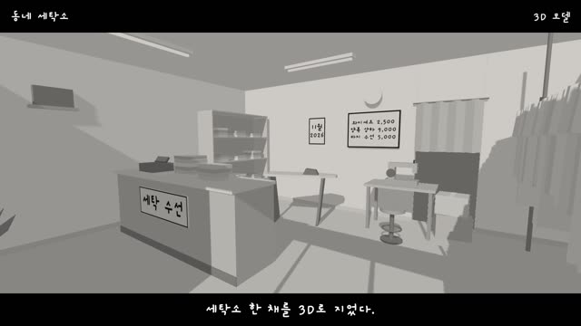
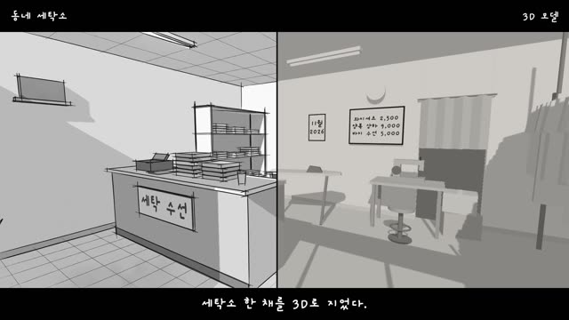
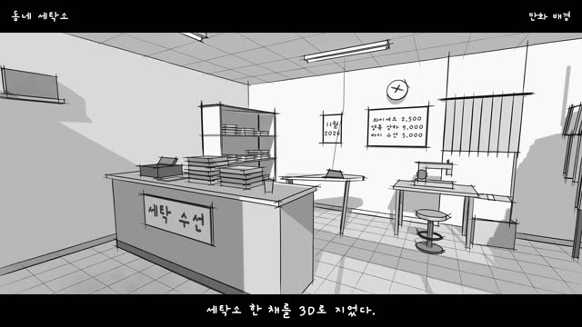
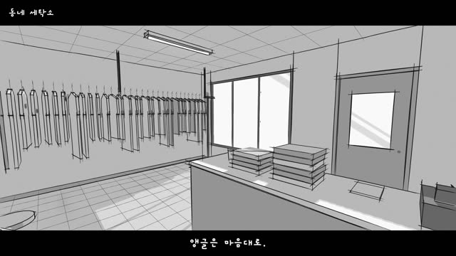
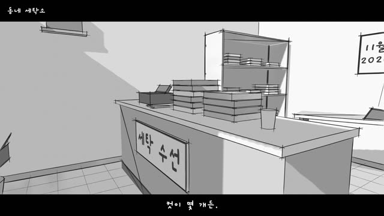
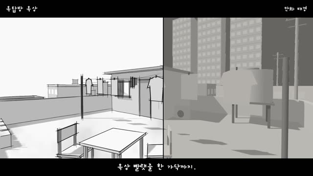
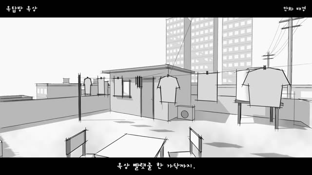
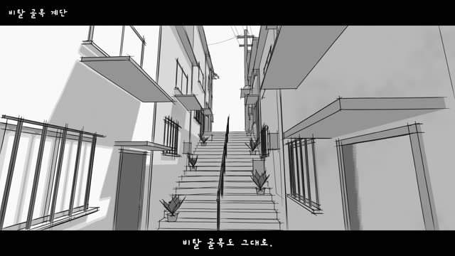
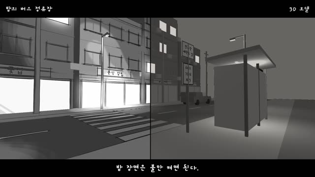
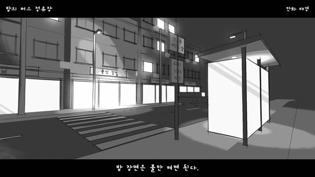
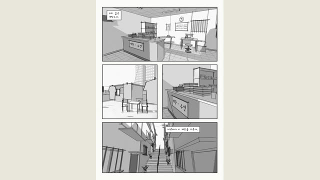
등대지기의 섬 1920×1080 · 23.8초 · 시작 작품에 없는 주제로 만든 예제
작은 섬 등대의 마지막 등대지기 이야기를 위한 세트 세 곳입니다. 둥근 건물을 위에서 내려다보는 나선계단(패널 스무 장으로 지은 탑 벽, 가운데가 뚫린 계단), 널빤지 선착장과 고깃배 두 척(짧은 획으로 그린 바다, 돛대 줄, 밧줄 사리), 밤의 램프실(속이 비치는 유리, 빛나는 렌즈, 하늘 톤을 긁어 내는 빛줄기)을 브리프에서 설계했습니다.
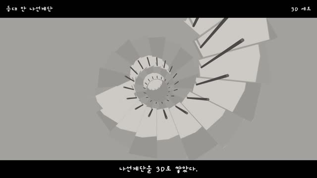
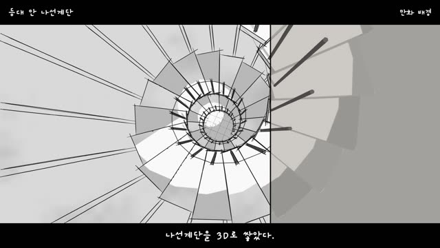
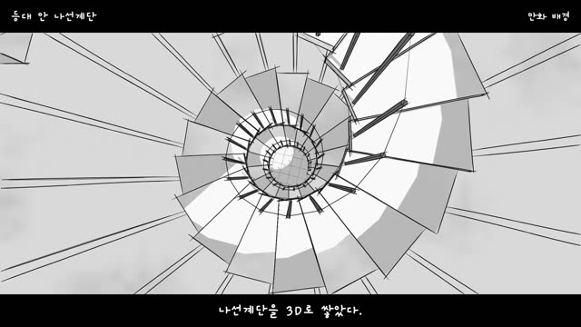
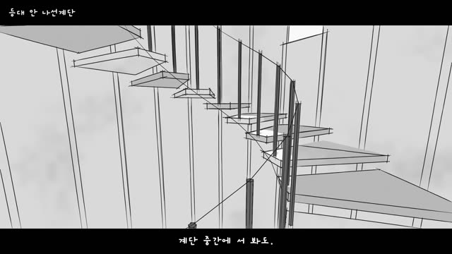
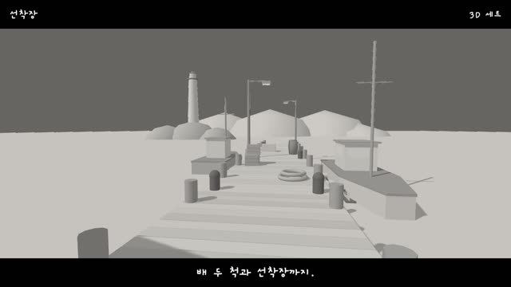
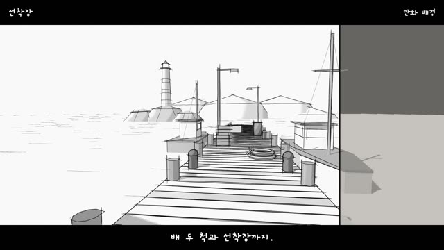
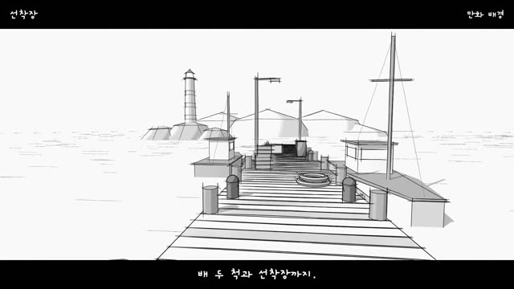
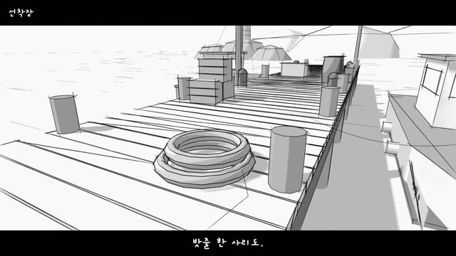
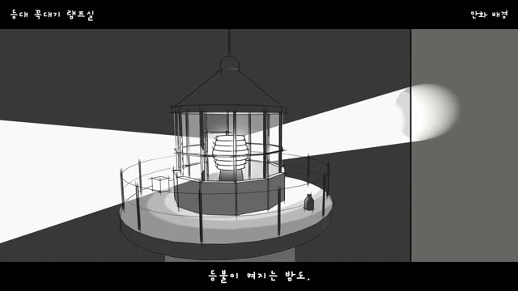
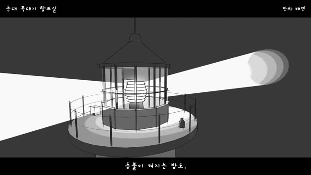
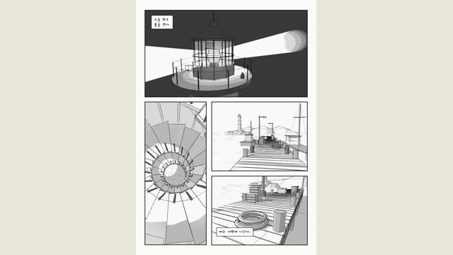
실제 작품
이 레포에서 만든 스킬입니다. 만화가 ぬこー様ちゃん(@nukosama)이 X에 올린 35초 영상(방 · 교실 · 편의점 · 전철 · 상점가 · 여름 축제의 밤을 회색 3D 모델로 보여 주고, 와이프로 만화 배경으로 바꾼 뒤 "손으로 그린 선은 한 줄도 없다"로 끝나는 영상)이 출발점입니다. 이 스킬은 그 형식과 배경의 말투(모델 → 와이프 → 만화 배경, 레터박스, 펜 선과 톤)만 가져옵니다. 원본의 장소, 자막, 만화 페이지, AI로 만든 3D 모델은 쓰지 않았고, 두 작품의 세트와 코드는 모두 이 레포의 것입니다.
링크
- SKILL.md 워크플로
- 폴더 lib · scripts · references · templates · examples
- README.md 빠른 시작
- references/SOURCE.md 원본 영상의 구성, 가져온 것과 가져오지 않은 것
- references/BRIEF.md 브리프 틀과 스틸 검토 기준
- references/KIT.md 세트 짓기: 기본 도형, 건축, 소품, 카메라
- references/LOOK.md 렌더 단계, 펜의 버릇, 상수, 배경 레이어와 페이지
- references/LESSONS.md 겪은 문제와 해결